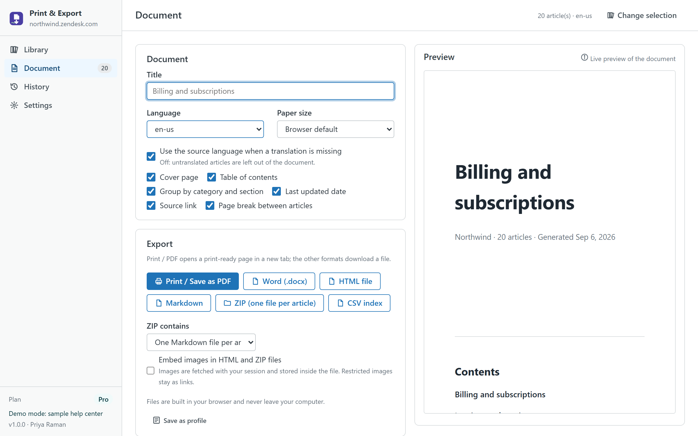
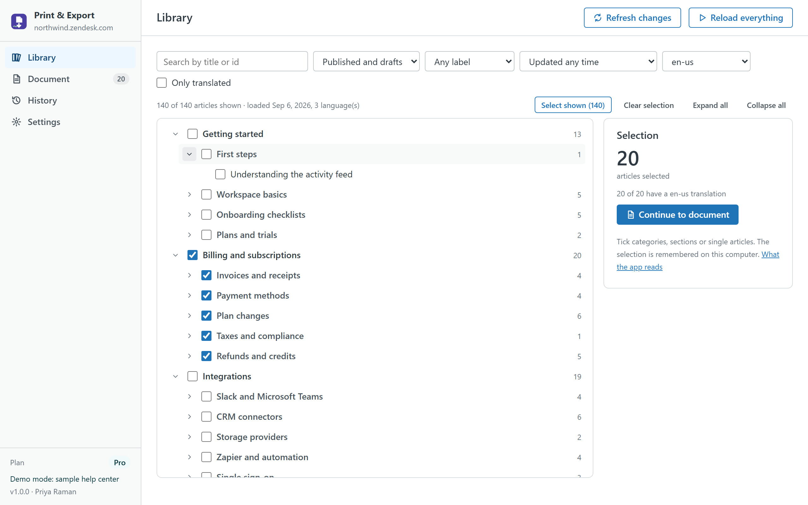

Help Center Print & Export
Turn any part of your help center into a document without leaving Zendesk. Pick articles, sections or categories, set the cover and branding, check the live preview, then print, save as PDF or download Word, HTML, Markdown, ZIP and CSV files. It runs in your browser with your own permissions and never writes anything.

What you can export
- Print / Save as PDF: a print-ready page with a cover, contents, page breaks and A4 or Letter paper size. Use your browser's Print and choose "Save as PDF".
- Word (.docx) with headings, lists, tables, code and the images the signed-in agent can see.
- Single HTML file, optionally with images embedded so it works offline.
- Markdown as one file, or a ZIP with one Markdown or HTML file per article in category and section folders plus an index.
- CSV index: id, title, category, section, language, last update, URL and word count of every exported article.
How the selection works
The Library shows your help center as a tree of categories, sections and articles with tri-state checkboxes. Search by title or id, filter by status, label, last update or "only translated", pick the document language, and the app remembers the selection on your computer. A "Refresh changes" button reads only the articles updated since the last load.

Plans
| Free | Pro · $15 per month per account | |
|---|---|---|
| Articles per document | 1 | Up to 500 |
| Languages | Default language | All enabled languages, with fallback or strict mode |
| Formats | Print / PDF, HTML | Print / PDF, Word, HTML, Markdown, ZIP, CSV |
| Cover logo, company name, footer | — | ✓ |
| Custom article order | — | ✓ |
| Images embedded in HTML and ZIP | — | ✓ |
| Saved export profiles and one-click repeat | — | ✓ |
| Free trial | 14 days |
Pro is billed through the Zendesk Marketplace per account, not per agent, and can be cancelled from Admin Center at any time.
Privacy
The app has no server. Articles are read through the Zendesk API with the signed-in agent's session; the article cache, selection, history, profiles and settings live in the browser's local storage on the agent's computer and can be cleared from Settings. Images are fetched with the agent's session only for Word files or when "Embed images" is on. Nothing is sent to the developer or to any third party; there are no analytics, cookies or AI services. The same privacy policy and terms as Help Center Doctor apply.
Install
- Open the listing on the Zendesk Marketplace (link added once the listing is approved), click Install and choose a plan. You need to be a Zendesk admin.
- Choose the roles or groups that may use the app, then click Install.
- In Zendesk Support, open Print & Export from the left navigation bar and click Load help center.
Frequently asked questions
Does it create real PDF files? It opens a print-ready page and uses your browser's own "Save as PDF", which gives you selectable text, working links and the paper size you chose. There is no server-side conversion and no upload of your content.
How big can a document be? Up to 500 articles per document on Pro. A 150-article HTML file builds in under a second; Word files with many images take longer and can be large.
Will it slow down my agents? No. Loading uses about one request per 100 articles, well inside Zendesk's limits, and only while the app is open.
What about restricted articles or images? The app only sees what the signed-in agent can see. Images that cannot be fetched stay as links.
Also from the same developer: Help Center Doctor finds and fixes broken links, missing images, stale content and structure problems; Help Center Link Checker is the free link checker.
Support: support@helpcenterdoctor.app, answered within one business day.